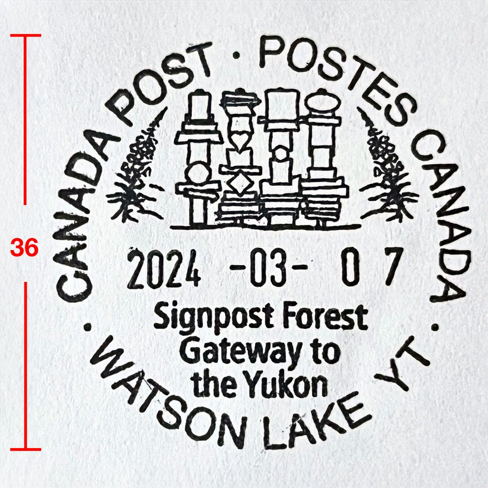

Watson Lake PO pictorial cancel
Signpost Forest Gateway to the Yukon
- Status
- Active
- Run dates
- ? to present
- Design
- "Signpost Forest Gateway to the Yukon"; signposts
- Ink colour
- Black
- Designer
- Unknown
- Post office
- Watson Lake PO
820 B Adela Trail
Watson Lake, YT
Y0A 1C0 - Subjects
- roadside attraction
Collect it by mail. Send your stamped covers, with a stamped return envelope, to the post office address above. How to collect pictorial cancels by mail · en français
 Teslin POBridge
Teslin POBridge Carcross PO1st caribou
Carcross PO1st caribou Carcross POHouse
Carcross POHouse